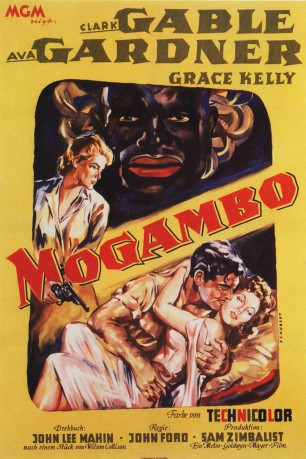

#11058 Mogambo: Abenteuer in Afrika
Alternativ: Mogambo (Englischer Titel)
Auszeichnungen: für 2 Oscars nominiert 1 GoldenGlobes gewonnen
 
 IMDB-Wertung: 6.7 / 10
IMDB-Wertung: 6.7 / 10  Metascore: 0
Metascore: 0 
Clark Gable spielt eine seiner großen Paraderollen als wortkarger Einzelgänger Victor Marswell, der sich als Großwildjäger in die afrikanische Wildnis zurückgezogen hat. Eines Tages wird seine Abgeschiedenheit durch zwei aufregende Frauen durcheinander gebracht: Gleichzeitig treten die Tänzerin Eloise und die elegante Linda Nordley in sein Leben. Beide verlieben sich in den verschlossenen Abenteuerer. Auf einer Safari kommt es zur gefährlichen Konfrontation...
Jahr: 1953
Dauer: 111 Minuten
FSK: 12
Land: USA Studio: MGMTonspuren: DD2.0 - ,
Untertitel:
Auflösung: 1080p (1432x1080) Größe: 4751 MB
Genre: Drama, Abenteuer, Liebe
Regisseur: John Ford
Drehbuch: John Lee Mahin, Wilson Collison
Soundtrack:
Darsteller:
 Clark Gable als Victor Marswell
Clark Gable als Victor Marswell Ava Gardner als Eloise Y. Kelly
Ava Gardner als Eloise Y. Kelly Grace Kelly als Linda Nordley
Grace Kelly als Linda Nordley- Donald Sinden als Donald Nordley
 Eric Pohlmann als Leon Boltchak
Eric Pohlmann als Leon Boltchak Laurence Naismith als Skipper
Laurence Naismith als Skipper- Denis O'Dea als Father Josef
- Samburu als Themselves
- Bruce Seton als Wilson (uncredited)
- Philip Stainton als John Brown-Pryce
- Wagenia als Themselves
- Bahaya als Themselves
- M'Beti als Themselves
- Asa Etula als Young Native Girl (uncredited)
Datei: X:\1950-1959\Mogambo Abenteuer in Afrika (1953, FSK12, 1432x1080).mkv seit 24.04.2019
Festplatte: Gemischt-01+Anime
 Es gibt insgesamt 141 Filme in der Gruppe '1950-1959'
Es gibt insgesamt 141 Filme in der Gruppe '1950-1959'